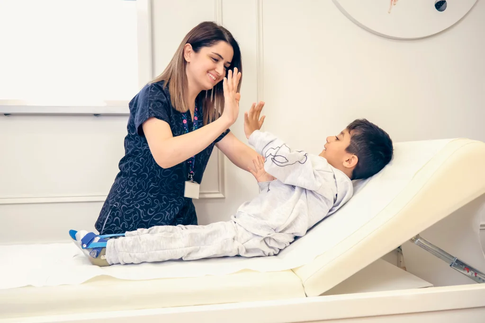
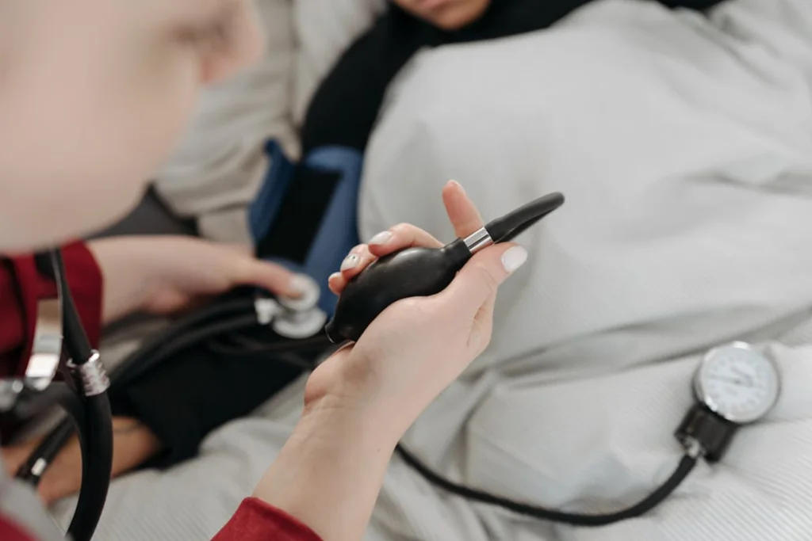

Our Departments
Bringing essential medical care closer to home. Explore our core clinical departments tailored to meet the everyday health and wellness needs of our community.

General Family Practice
Your first point of contact for everyday health. We provide comprehensive consultations, chronic disease monitoring, and preventive health guidance for every member of the family.
Routine Check-ups
Regular wellness assessments to catch health issues early and keep your family strong.
Common Illness Treatment
Fast and reliable diagnosis and treatment for everyday ailments like flu, infections, and fevers.
Chronic Care
Continuous, supportive management for conditions such as hypertension and diabetes.
Personalized Care Plans
Tailored medical advice and health management plans designed for rural living.
Maternal & Child Health Department
Safeguarding the health of mothers and little ones. We provide compassionate support from pregnancy through childhood development.
Antenatal Care
Dedicated health monitoring and guidance for expectant mothers for safe pregnancies.
Child Immunizations
Routine vaccinations protecting infants and children against preventable diseases.
Growth Monitoring
Tracking child development, nutritional support, and vitamin supplementation.
Postnatal Support
Guidance and care for mothers and newborns following delivery.
Diagnostics & Laboratory Services
Accurate and timely testing right on-site so doctors can diagnose conditions quickly without requiring unnecessary travel.
Blood Tests
Quick screening for malaria, typhoid, blood sugar levels, and complete blood counts.
Urinalysis & Diagnostics
Essential lab tests to identify infections and monitor organ health accurately.
Vital Screening
Blood pressure, BMI, and metabolic assessments for early detection.
Fast Results
Quick turnaround times to ensure treatment starts promptly.

Urgent Care & First Aid
Reliable medical assistance for sudden injuries, minor trauma, and acute health flare-ups when you need prompt attention.
Minor Injury Care
Wound cleaning, stitches, bandaging, and minor trauma treatment.
Acute Symptom Relief
Immediate stabilization and treatment for sudden high fevers, severe pain, or allergic reactions.
Emergency Triage
Initial assessment and stabilization before referral to specialized facilities if needed.
Nursing Support
Dedicated injection, dressing, and outpatient observation services.

Community Health & Outreach
Taking healthcare beyond clinic walls. We work directly with rural villages to promote preventive wellness and health education.
Mobile Health Camps
Bringing basic screenings and doctor consultations directly to local neighborhoods.
Health Education
Practical workshops on hygiene, sanitation, nutrition, and disease prevention.
Preventive Screening
Mass blood pressure and blood sugar checks for early community risk awareness.
Family Wellness Support
Building a healthier rural community through continuous support and guidance.